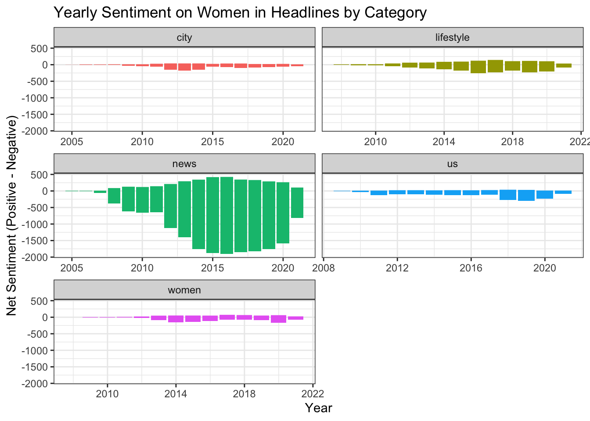
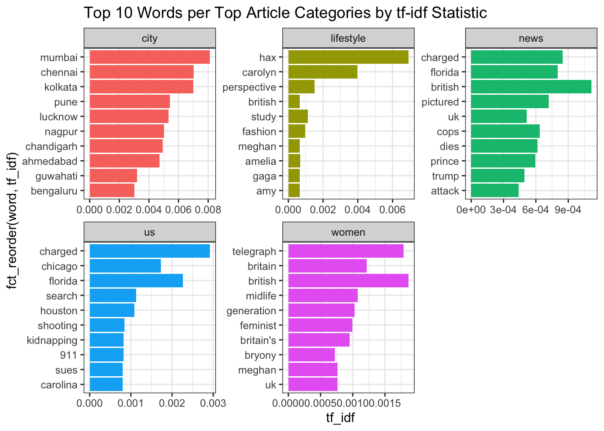

Code
top_10_sites <- headlines |>
count(site, sort = TRUE) |>
slice_max(n, n = 10)|>
pull(site)
filtered_headlines <- headlines |>
filter(site %in% top_10_sites)Rain Hartos
The portrayal of women in media headlines offers valuable insights into societal perceptions and cultural norms in the landscape of gender representation. One area to look at women in media is article headlines, which often shapes public perceptions and influence how women are viewed in various contexts. This study explores important aspects of media coverage about women: the most common topics and themes present in headlines, and how the overall sentiment conveyed by these topics have shifted over time. By analyzing these dimensions, we can identify key trends that reflect women in the media.
The dataset being used is a subset of the data found from The Pudding, which compiles a list of headlines tagged with the keywords “women OR woman OR girl OR female OR lady OR ladies OR she OR her OR herself OR aunt OR grandmother OR mother OR sister”. These article headlines were scraped from the top 50 news publications according to similarweb in USA, India, UK and South Africa, from the years 2005 to 2021. To streamline the analysis process, this subset includes only headlines from the 10 most common websites.
In order to look at common topics and themes, we are first interested in extracting the headline topic that the articles fall under.
filtered_headlines2 <- filtered_headlines |>
rename(row_ID = `...1`)|>
mutate(
category = str_remove(url, "https?://[^/]+/"), # Remove protocol and domain
category = str_replace(category, "-", ""), #remove the - that separates a few words
category = str_remove(category, "\\d{4}(?:/\\d{2}){0,2}"), #remove those with dates
category = str_to_lower(str_extract(category, "^[^/]+")), # Extract the first segment of the path
word_count = str_count(headline_no_site, "\\S+"),
year = year(time) ) #count the number of words, used for later
kable(filtered_headlines2|>
filter(!is.na(category))|> #The ones that are NA do not have a category since they were categorized by date
count(category, sort = TRUE)|>
slice_head(n=10))| category | n |
|---|---|
| news | 24620 |
| lifestyle | 3943 |
| us | 2333 |
| city | 2246 |
| women | 2240 |
| newyork | 2214 |
| blogs | 1842 |
| femail | 1819 |
| entertainment | 1770 |
| health | 1173 |
In the table above, we can see that some of the most common article topics involving women include news, lifestype, US, city, and women. This is great, but it may also be nice to see the most common theme for each headline. We can do this by finding the most common themes that are associated with the words from the headlines.
tokened_headlines <- filtered_headlines2 |>
unnest_tokens(output = word, input = headline_no_site)|>
anti_join(stop_words)
kable(tokened_headlines|>
left_join(word_themes)|>
filter(!is.na(theme))|>
group_by(row_ID, url)|>
count(theme, sort = TRUE) |> # Count the frequency of themes per row
slice_max(n) |> # Select the most common theme per row
ungroup()|>
count(theme, sort = TRUE))| theme | n |
|---|---|
| No theme | 33993 |
| crime and violence | 13132 |
| female stereotypes | 12034 |
| people and places | 11305 |
| empowerment | 6473 |
| race, ethnicity and identity | 3129 |
The table shows that the most common themes related to women in articles is no theme, crime and violence, female stereotypes, and people and places. Since the majority of articles do not fall into a theme, we need a better way to analyze the articles, specifically the trends of the words in the headlines. This leads us to shift our focus to analyzing how the sentiment about women in headlines have changed over time.
bing_sentiments <- get_sentiments(lexicon = "bing")
top_categories <- c("news", "lifestyle", "us",
"city", "women")
tokened_headlines|>
filter(category %in% top_categories) |>
inner_join(bing_sentiments)|>
#group_by(row_ID, url)|>
count(row_ID, year, category, sentiment) |>
pivot_wider(names_from = sentiment, values_from = n, values_fill = 0) |>
mutate(sentiment = positive - negative) |>
ggplot(aes(x = year, y = sentiment, fill = category)) +
geom_col(show.legend = FALSE) +
facet_wrap(~category, ncol = 2, scales = "free_x") +
labs(
title = "Yearly Sentiment on Women in Headlines by Category",
x = "Year",
y = "Net Sentiment (Positive - Negative)"
) +
theme_bw()
The graph shows yearly net sentiment trends on women in headlines across the top 5 five categories: city, lifestyle, news, US, and women. Most categories, including “city,” “lifestyle,” “US,” and “women,” show stable sentiment trends that are predominantly neutral to slightly negative over time, with minimal fluctuations. In contrast, the “news” category shows significant negative sentiment, particularly between 2010 and 2020, with a peak of negativity around 2015–2018. This is possibly due to how words that carry negative sentiment tend to be used more often in news headlines.
We can look more closely at the most common words in each category using the tf-idf statistic.
headlines_word_count <- tokened_headlines |>
filter(category %in% top_categories) |>
#filter(!word %in% c("hax", "carolyn", "british", "britain", "uk")) |>
anti_join(stop_words) |>
count(word,category,sort = TRUE)
potter_tfidf <- headlines_word_count |>
bind_tf_idf(word, category, n)
potter_tfidf |>
group_by(category) |>
arrange(desc(tf_idf)) |>
slice_max(tf_idf, n = 10) |>
ungroup() |>
ggplot(aes(x = fct_reorder(word, tf_idf), y = tf_idf, fill = category)) +
geom_col(show.legend = FALSE) +
coord_flip() +
facet_wrap(~category, scales = "free") +
labs(title = "Top 10 Words per Top Article Categories by tf-idf Statistic") +
theme_bw()
The graph highlights the most distinctive words in article categories based on TF-IDF scores, showcasing the primary focus of each category. The “city” category is dominated by Indian cities like Mumbai and Chennai, which makes sense given the category type. “Lifestyle” features terms such as “fashion,” “study,” and names like “Carolyn” and “Meghan,” which are writers for advice columns. In the “women” category, words such as “feminist,” “midlife,” and “Britain” suggest themes around gender issues and societal roles with a interesting emphasis on the UK. Lastly, The “news” and “US” categories focus on crime, legal events, and prominent figures, with words like “charged,” “Florida,” “Trump,” and “shooting.”
This makes sense why the net sentiment is primarily negative across years for the news and us category given that words like “charged” and “shooting” clearly have a negative sentiment associated with it. The top words for the other categories nether have a clear positive or negative sentiment associated with it, which may explain the stable sentiment trends.
From the text analysis of women in headlines, we can conclude that certain categories exhibit stable sentiment trends while others reveal persistent negativity tied to specific themes. These findings shows that generally, women in headlines are most often categorized in topics relating to the news with a overall general negative sentiment throughout the years 2005 to 2021.